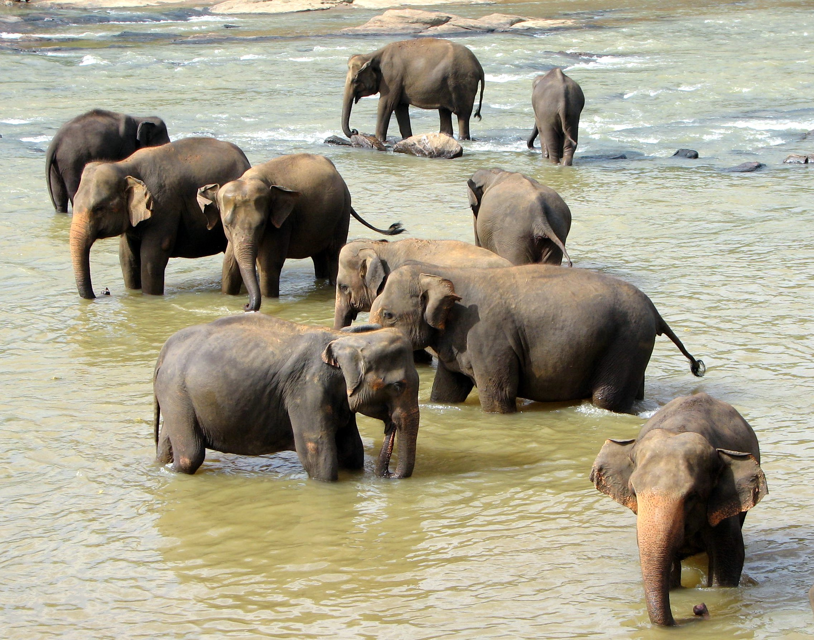
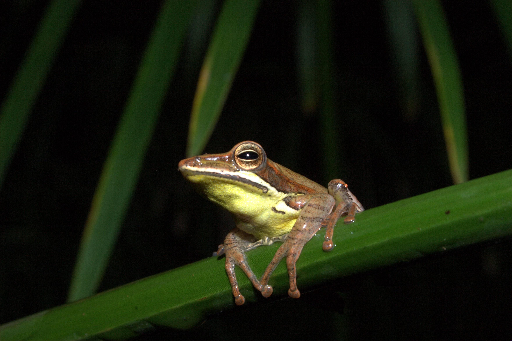
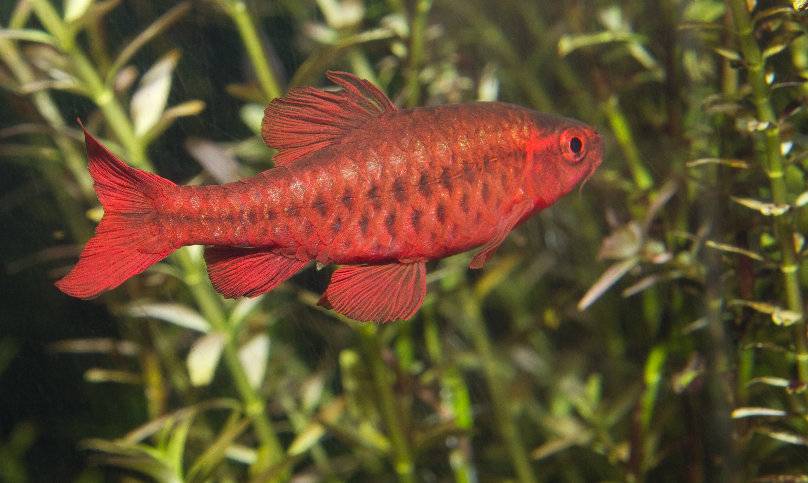

Mammals
-

Sri Lanka is home to roughly 123 species of mammals, 41 of which are threatened (9 critically). 16 of the species are endemic, of which 14 are threatened, including the large sloth bear, the endemic Sri Lanka leopard, the Sri Lankan elephant and the sambar. Bats have the highest amount of species (out of 200 mammalian orders), with 30 species. Sri Lanka's surrounding waters are home to 28 species of Cetaceans.
Reptiles

Sri Lanka currently contains 185 species of reptiles, of which 60 are threatened and 115 are endemic. Most of the reptiles are snakes and the largest two are the mugger crocodile and saltwater crocodile.
Frogs
Sri Lanka has one of the richest diversity of amphibians in the world, containing 122 species of amphibians up to January 2019 with many recent discoveries, with 112 endemic species. 52 species of amphibians in Sri Lanka are threatened, all but one of which are endemic.
Birds

Sri Lanka is home to 227 species of birds (though some past estimates put it as high as 486), 46 of which are threatened
fishes
Sri Lanka contains 93 species of freshwater fish, of which 50 are endemic. 28 species are categorized as threatened by the IUCN. There are 8 species of brackish water fish that also come to freshwater, and 24 introduced exotic fish species.